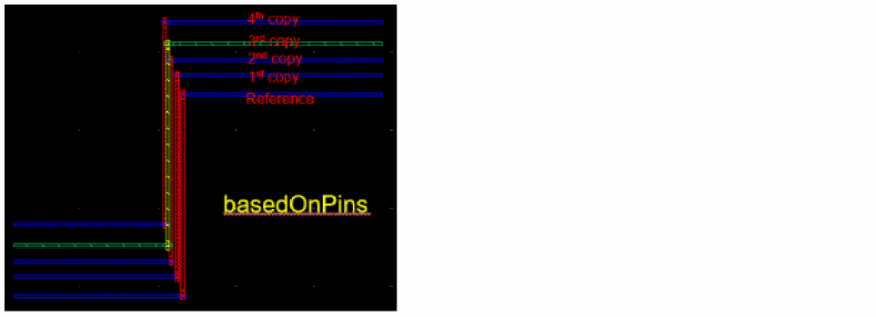
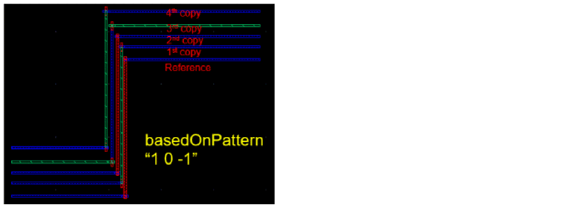

copyRouteLayersMode
we copyRouteMultilayerMode cyclic { "sameAsReference" | "basedOnPins" | "basedOnPattern" }
Description
Specifies the layer mode for copy route.
-
sameAsReference: Lets you select different layer pins, where different layers means different from the reference pin layer. The first and last pathSeg layer is the connected pin layer. The intermediate section layer is the same as the reference pin. -
basedOnPins: It is similar toforPinsOnly, but the intermediate section layer is adjusted based on the pin layer difference. For example, in the following figure, the reference wire isM1 - M2 - M1. The copy from M3 pin would beM3 - M4 - M3. All the layers are two layers ahead because the pin layer difference isM3 - M1 = 2.
 -
basedOnPattern: specifies the user-defined pattern. This is dependent on the pattern specified in the copyRouteLayerPattern environment variable. For example, in the following figure, the middle layer of reference wire is M2 and the pattern is “1 0 -1”. The first middle layer copy is M3 (+1 layer). The second middle layer copy is M2 (+0 layer). The third middle layer copy is M1 (-1 layer). Then we repeat the pattern, so the 4th middle layer copy is M3 (+1 layer).

GUI Equivalent
Examples
envGetVal("we" "copyRouteMultilayerMode")
envSetVal("we" "copyRouteMultilayerMode" 'cyclic "forPinsOnly")
envSetVal("we" "copyRouteMultilayerMode" 'cyclic "basedOnPins")
envSetVal("we" "copyRouteMultilayerMode" 'cyclic "basedOnPattern")
Related Topics
Variables to Customize the Settings for Copy Route
Return to top